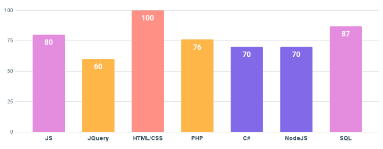

WEB-DEVELOPER
A specialist who develops, tests, fixes, updates, improves websites, web services and multimedia applications using programming languages. In simple terms, this is a programmer who creates websites and does everything to make them work correctly.
Specialist history

The history of the web developer profession began in 1990, when the British inventor Tim Berners-Lee introduced the world to the revolutionary World Wide Web project, in which he developed the first website. From that moment on, technologies began to develop rapidly, and a few years later there was a full-fledged Mosaic browser, HTML markup language, CSS cascading style sheets, JavaScript, C and . For some time, there was no single syntax, which caused difficulties in the work of programmers.
A breakthrough in this industry was the emergence of the PHP scripting language. With its help, web pages have turned from static texts into dynamic images with buttons, forms, animations. Beautiful and user-friendly sites began to be popular.
Not only large corporations, but also ordinary users wanted to have their own page on the Internet. Over the past 30 years, the IT industry has become one of the leading ones, and web developers have been required in various areas: from Internet marketing to artificial intelligence.
Directions in web development
|
A specialist who works with the internal parts of the site: writes code in various languages, is responsible for the smooth operation of the site, the organization of technical processes and the database. The back-end developer uses the following tools: different programming languages (PHP, Perl, Java, Python, Ruby), frameworks (Kohana, Codeigniter, Yii), and MySQL to save data. |
a specialist who works on the visual side of the site. He translates the design project into code. so that the external side of the site functions correctly and images are displayed correctly everywhere. Its main tools are CSS, HTML, JavaScript. This list is supplemented by a whole list of programs designed to improve the site: Bootstrap, jQuery, AnguarJs, LESS, Sass / SCss, etc. |
a professional who can perform the tasks of a backend and frontend developer. There are quite a few such masters, because it is very difficult to master the whole range of knowledge. |
Skills and Abilities of a Frontend Developer
SOFT SKILLS
- Creativity
- Persuasion skills
- Ability to work in a team
- Time management
- Adaptability
HARD SKILLS
- Cloud hosting skills - AWS, GCP, Azure
- Working knowledge of artificial intelligence algorithms
- Making decisions to solve problems
- Team management
- UX-design
Popular languages and technologies for frontend development
The most popular languages and technologies for frontend development at the moment (2022, June 8)
HTML - a standardized hypertext markup language for viewing web pages in a browser. Web browsers receive an HTML document from a server via HTTP/HTTPS protocols or open it from a local disk, then interpret the code into an interface that will be displayed on the monitor screen.
CSS - a formal language for describing the appearance of a document (web page) written using a markup language (most often HTML or XHTML). It can also be applied to any XML document, such as SVG or XUL.
React - an open source JavaScript library for developing user interfaces.
JavaScript(JS) - multi-paradigm programming language. Supports object-oriented, imperative and functional styles.
PHP (previous name: Personal Home Page Tools) - a general-purpose scripting language heavily used for developing web applications.
Advantages disadvantages of the profession

ADVANTAGES
- demand in the labor market
- creative work, since each task is unique, and there are several ways to solve it
- the possibility of combining with studies
- diploma is not always required
- possibility of remote work
DISADVANTAGES
- irregular working hours
- sedentary work
- a large load on vision, which can lead to its deterioration
- sometimes you have to work "on the table" and redo it, as the requirements change on the go
- you need to constantly learn, because everything quickly becomes obsolete - this is a minus only for those who do not like to learn
How Much Do Web Developers Get?
The salary level depends not only on experience, but also on the main programming language. Some are popular and easy to learn, while others are less common and are used to solve narrow problems. Let's talk about the more common ones.
Specialist levels:
Junior - knows programming languages and writes simple working code that is checked by senior colleagues. Little experience - 0-1.5 years. While he does not represent the entire development process, he performs the received tasks.
Middle - experience 1-3 years. Usually there are projects that I did completely on my own. Can develop without superfluous control, knows the best practices of their languages. Able to check and correct someone else's code.
Senior - experience from 4 years, but experience is more important. He sees the development from the point of view of all participants: from managers to junior colleagues. Able to offer global solutions - for example, changing the set (stack) of technologies. Often in leadership positions.
| Directions | Number of vacancies | Junior | Middle | Senior |
|---|---|---|---|---|
| Fullstack-developer | 340 | 20 | 17 | 17 |
| Backend-developer | 1099 | 43 | 40 | 40 |
| Frontend-developer | 2159 | 66 | 55 | 55 |
Perspective for the profession
A There are three types of people. The first ones are blamed for the fact that, without a hitch, a piece of intelligence sits in a working place and helps to earn a living, others - they don’t get it, if the neural networks are found to start doing all the routine work for them, to dedicate their lives to more busywork. And the third one understands that the replacement of human work with machine work is an inevitable process, but if it’s possible to deprive someone of them without a job, then it’s definitely not them, people, like programmers behind the fah.
The rest of us are so afraid of clerks, even if everything goes to the point where, without a hitch, people in corporations can replace a programmer, who will serve the neuromeasurement, which is built up to self-training that self-perfection. Powerful gadgets will help all the greater number of programmers, and further their numbers will only grow